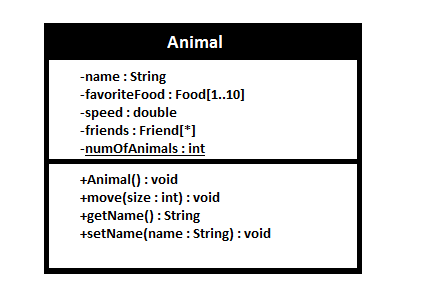
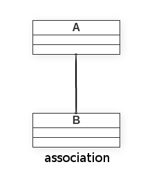
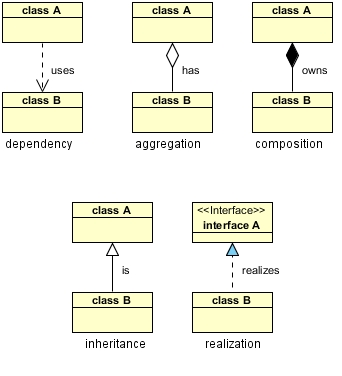

Merhaba arkadaslar bugun UML‘in ne oldugundan bahsedecegim.UML nesne tabanlı programlama yapmaya başlamadan önce ilk adım gibi düşünülebilir.Gerçek dünya nesnelerini projemize uygun olarak modeller ve sonrasına bu modele uygun bir şekilde kodlamaya baslariz.

Yukarıdaki kutucuğu inceledigimizde Animal yazısının oldugu yere sınıfın ismi ve alt kısımda 2 parçaya ayrılmıs olan kisimlarin ise ilk kısmında variable’ların sıralandıgı ikinci kısımda ise methodların sıralandıgı görülmektedir. Başlarındaki ‘+’ veya ‘-‘ ise onların erişim belirleyicileridir.Diğer erişim belirliyicileri ise aşagıdaki gibir.
– : Private
# : Protected
~ : Package Access
+ : Public
Genel Kurallar :
- Sınıf isimleri bold yazılmalı.Fakat olsuturucagımız sınıf abstract ise sınıf ismi italic bold yapılmalı.
- Eğer variable veya methodumuz static ise
altı çiziliyapmamız gerekmektedir.numOfAnimals değişkeni gibi. - Yukarıdaki resimde yer alan [1..10] ve [*] gibi ifadeler çoklulugu ifade eder.Yani kodumuzu yazarken bunları ArrayList gibi düşünebiliriz.
Temel UML kavramlarından bahsettikden sonra sıra geldi asıl konumuza.Sınıfların birbiri ile ilişkilerini ifade etmek için belli başlı başlıklar var bunlar;
- Dependency ( Bağımlılık )
- Association ( Ortaklık )
- Aggregation ( Birleştirme )
- Composition ( Bileşim )
- Generalization (Inheritance) ( Kalıtım )
- Realization ( Gerçekleşme )
 
Yukarıda sınıf diyagramı ilişkileri bulunmaktadir.
- Association : Class A ile class B bir aradadır.
- Aggregation : Class A class B ye sahiptir.
- Composition : Class A class B yi barındırır.
- Dependency : Class A class B yi kullanır.
- Realization : class B Class A’yı realize eder. (implements)
Gelin bu bilgileri pratige dokerek kodlamaya gecelim.
Dependency
public class A {
public void doSomething(B b) { // Dependency line 1
b.getSomething(); // Dependency line 2
}
}Bir sınıf bir başka sınıfın nesnesini local variable olarak kullanıyorsa buna dependency denir.Bildiğiniz gibi bir methodun parametresi o methodun aynı zamanda local bir değişkenidir.Yani yukarıdaki örneğe bakacak olursanız A sınıfı B sınıfının nesnesini local olarak alıp kullanmaktadır. Bu yüzden bu iki sınıf arasındaki ilişkiye dependency denmektedir.
class A {
void foo(){
B b= new B();
b.bar();
}
}
class B {
void bar(){
}
}Association
Association ortada bir sahibin olmadığı ilişkilere denir.Öğretmen ve öğrenci örneğini ele alalım.Bir öğrencinin birden fazla öğretmeni veya bir öğretmenin birden fazla ögrencisi olabilir.Dikkat edin ikisi arasında bir sahiplik söz konusu değil.Bu tarz bir ilişki söz konusu ise association söz konusudur.
class Ogrenci {
Ogretmen ogretmen;
public void doSomething(Ogretmen ogretmen) {
this.ogretmen = ogretmen;
}
}
class Ogretmen {
//...
}Yukarıdaki örneği incelersek Ogrenci sınıfı kendi methodunun parametresi ile öğretmen nesnesini kendi field ına atmakta.
- Dependecy ile kıyaslarsak;
Dependecy’de instance variable(field) söz konusu değildi associationda bir field söz konusu yani diyebilirizki dependecy ilişkisi daha zayıftır.
Aggregation
Bazı nesnelerin olabilmesi için bazı nesnelerinde olması lazım.Peki nedemek bu?Örneğin bir arabamız var ve bu arabada motor,kapı,direksiyon vs birçok nesnenin olması lazım.Veya bir firmadaki takımı düşünürsek takım nesnesi birçok personel nesnelerinden oluşabilir. İşte nesnelerin bu şekildeki parça-bütün ilişkisine aggregation denmektedir. Kodlama açısından bakıcak olursak eğer ,sınıfın instance variable’ı(field’ı) başka bir sınıfın nesnesiyse ve herhangi bir methodun parametresi aracılığıyla bu instance variable initialize ediliyorsa buna “aggregation” denir. Aggregation association’a göre daha güçlüdür. Dolayısıyla aggregation’a güçlü association da denir.
public class A {
private B b;
public void setB(B b) {
this.b = b;
}
}Aklınıza şu soru takılmış olabilir.Association ile Aggregation kodlama açısından aynı olmadımı ? Eğer association’ın yazısına geri dönecek olursanız aynı olduğunu görüceksiniz.Fakat işin temelinde ayrıştıkları noktalar var.
- Association ve Aggregation Arasındaki Farklar ;
Association zayıf baglılıktır.Aile gibi düşünebiliriz.Her aile birbirine baglıdır ama her biri aslında birer bireydir.Aileden ayrıldıgında yaşamında devam edebilir.Aggregation ise fabrika ürünleri gibi düşünebiliriz.Mesela mikrodalga içerisindeki nesneler tek basına bir işe yaramaz ama mikrodalga içerisinde birlikte çalıştıkları zaman işe yarar bir nesne ortaya çıkar.
Composition
Aggregation’ının daha güçlü haline Composition denmektedir. Composition’da da parça-bütün ilişkisi vardır, fakat parça ve bütün nesnelerinin ömürleri birbirine sıkı sıkıya bağlıdır. Birinin ölmesi/yok olması/silinmesi diğerini de öldürür/yok eder/siler. Aggregation’da birbirine kenetlenmiş bir ömür bağı yoktur. Compostion’a kod açısından bakılacak olursa bir sınıfın instance variable’ı başka bir sınıfın nesnesi ise ve tanımlanırken aynı zamanda direk initialize edilmişse buna “composition” denir.
public class A {
private B b = new B() // b field'ı direk initialize edilmekte
}Aşağıdaki her iki kod da yukarıdaki koddan görünüşte farklı görünen fakat uml ilişkisi açısından yine composition olan kodlardır.
public class A {
private B b;
public A() {
b = new B(); // b field'ı direk initialize edilmekte
}public class A {
private B b;
public void doSomethingUniqueToB() {
if (null == b)
b = new B(); // b field'ı direk initialize edilmekte
b.doSomething();
}
}Yani eğer bir sınıfın instance variable’ı(field’ı) local bir değişken araya girmeden direk new komutu ile initialize ediliyorsa buna “composition” denir. Eğer initialize işlemine methodun parametresi “aracılığı” girerse, yani local bir değişken araya girerse o zaman o ilişki aggregation olur.
Inheritance
public class A {
...
}
public class B extends A {
....
}Realization
public interface A {
...
}
public class B implements A {
...
}